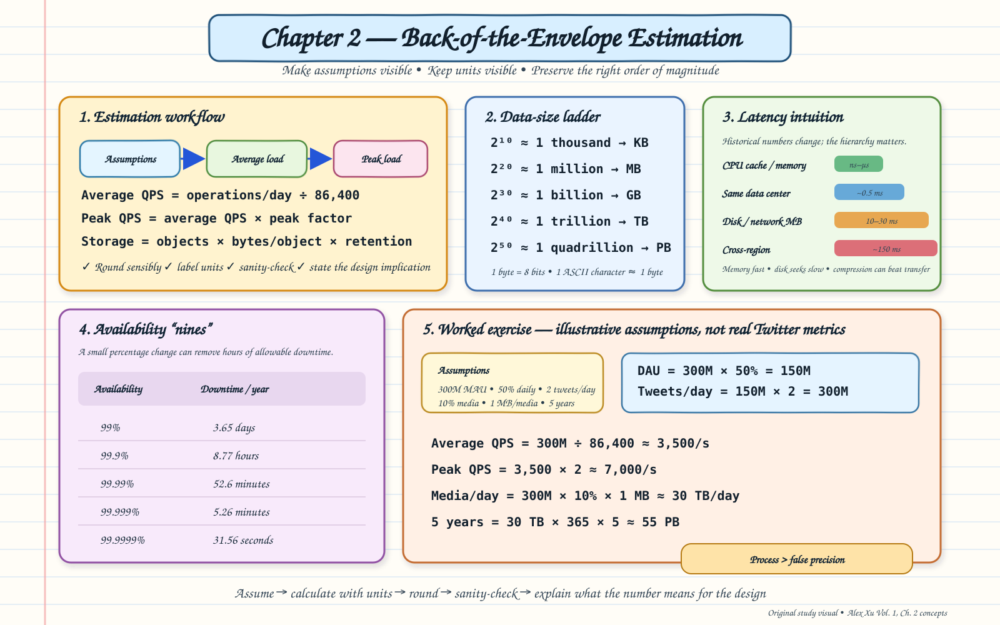

Topic · System Design Fundamentals
Back-of-the-Envelope Estimation
Turn vague scale into rough numbers that guide design - a transparent chain of assumptions, units, rounded math, and a sanity check.
Estimation cheat sheet
One printable reference: workflow, units, latency, availability, and a worked example.


Quick Revision
Core idea: estimation turns vague scale into approximate numbers that guide architecture. Aim for a defendable order of magnitude, not exact arithmetic - keep assumptions and units visible and finish with a sanity check.
Core formulas
DAU = MAU × daily-use % Operations/day = DAU × operations/user/day Average QPS = operations/day ÷ 86,400 Peak QPS = average QPS × peak multiplier Daily storage = objects/day × avg object size Retention = daily storage × retention days
Reference numbers
2^10 ≈ KB 2^20 ≈ MB 2^30 ≈ GB 2^40 ≈ TB 2^50 ≈ PB (1 byte = 8 bits) Latency (fast → slow): CPU/memory → same-DC network → disk/network → cross-region
| Availability | Approx. downtime / year |
|---|---|
| 99.9% | 8.77 hours |
| 99.99% | 52.6 minutes |
| 99.999% | 5.26 minutes |
Common mistakes
- Bare numbers with no units, or hidden assumptions.
- Confusing a daily total with a per-second rate.
- Reporting only average QPS and ignoring peaks.
- Mixing KB/MB/GB/TB during conversions.
- Treating a rough input as an exact answer.
- Ending with a number without saying what it changes in the design.
Active recall
Answer before revealing.
Why divide by 86,400 for average QPS?
There are 86,400 seconds in a day, so operations/day ÷ 86,400 gives the average per-second rate.
What is missing if an answer gives only average QPS?
The peak. Real traffic spikes above average, so apply an explicit peak multiplier.
Why remember latency numbers as a hierarchy?
Exact figures age with hardware, but the relative order (memory < same-DC < disk/network < cross-region) stays useful.
Method
A repeatable seven-step routine.
- Clarify what you are estimating: reads, writes, bandwidth, storage, cache, or servers.
- Define the population and behavior assumptions.
- Convert behavior into operations per day.
- Convert to average QPS, then peak QPS with an explicit multiplier.
- Compute bytes per object and retention storage where relevant.
- Round only enough to simplify without changing the order of magnitude.
- Sanity-check units and magnitude, then state the design consequence.
Worked exercise
An illustrative calculation - the values are exercise assumptions, not real Twitter metrics.
Assumptions MAU = 300 million Daily-use rate = 50% Tweets/user/day = 2 Media share = 10% Avg media size = 1 MB Retention = 5 years Peak multiplier = 2× Calculation DAU = 300M × 50% = 150M Tweets/day = 150M × 2 = 300M Average QPS = 300M ÷ 86,400 ≈ 3,500/s Peak QPS = 3,500 × 2 ≈ 7,000/s Media/day = 300M × 10% × 1 MB ≈ 30 TB/day 5-year storage = 30 TB × 365 × 5 ≈ 55 PB
Decision rules
Rules of thumb worth stating in an interview.
| Decision | Rule of thumb |
|---|---|
| Precision | Prefer a defendable order of magnitude over slow exact arithmetic. |
| Peak factor | State it explicitly; do not hide it in the result. |
| Latency | Use the relative hierarchy; current hardware figures vary. |
| Availability | More nines cut downtime but raise redundancy and operational cost. |
| Storage | Include retention and replication only when asked; say whether they are included. |
Interview practice
Answer aloud, then reveal.
Estimate read and write QPS for a given MAU and usage rate.
Convert MAU → DAU → operations/day, divide by 86,400 for average QPS, then apply a peak multiplier - separately for reads and writes.
Estimate five-year storage for records with metadata plus optional media.
bytes/record × records/day × 365 × 5, adding media share × media size; state whether replication is included.
How does a QPS or storage estimate change the design?
It drives capacity, caching, sharding, and storage-tier choices - high peak QPS argues for caching and horizontal scale; large storage argues for object storage and retention limits.
Final checklist
A good estimate has all of these.
- Assumptions written first.
- Units attached to every number.
- Average and peak clearly separated.
- Data-size conversions checked.
- Retention included where relevant.
- Result sanity-checked for magnitude.
- Design implication stated.